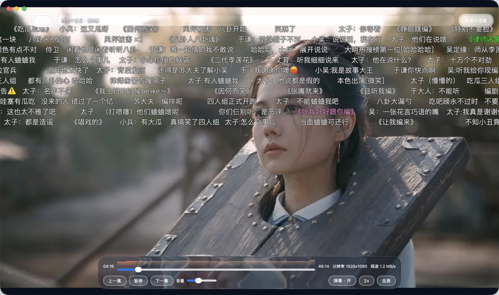
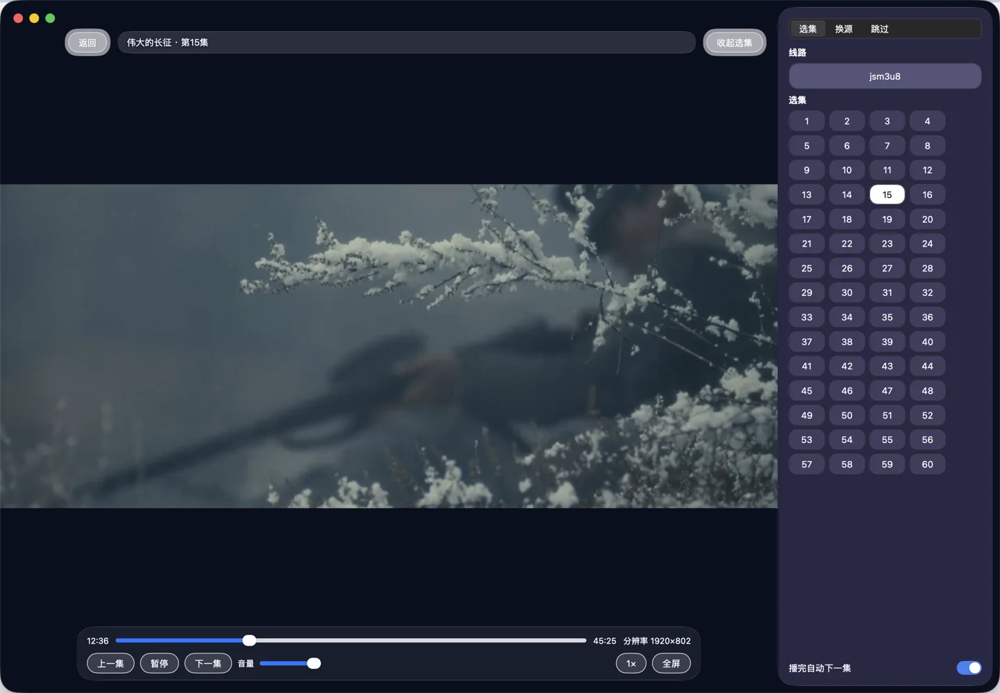

全格式硬解与桌面播控
集成 mygo-player（libmpv，零 cgo），原生直解 MKV、MP4、MOV、WebM、FLV、TS、AVI 等容器；支持多音轨、字幕偏移/样式与在线匹配、置顶迷你小窗（T）、画面比例/旋转、单集循环、长按 2× 倍速、截图与定时关闭。
一个入口，聚合你的所有片源。
原生桌面全格式多源影视播放器。导入自己的 TVBox 配置、网盘/AList、IPTV 直播，或直接打开本地视频，弹幕、多音轨字幕、续播与追剧一步到位。

原生界面与全格式硬解播放结合，看片、追剧、刷弹幕与看本地剧集不用来回切换。
集成 mygo-player（libmpv，零 cgo），原生直解 MKV、MP4、MOV、WebM、FLV、TS、AVI 等容器；支持多音轨、字幕偏移/样式与在线匹配、置顶迷你小窗（T）、画面比例/旋转、单集循环、长按 2× 倍速、截图与定时关闭。
按 D 键一键开关弹幕，内置开源公共弹幕服务开箱即用，也支持手动搜剧选集；60fps 四向描边、进度条高能密度曲线、时间偏移与关键词/类型屏蔽全齐备。
原生支持配置内的 AList、网盘站与直接粘贴分享链接，支持夸克、UC、阿里云盘与百度网盘官方网页登录，直接拉取原画直链并自动清理临时转存。
不导入任何片源也能直接双击、拖入或 ⌘O / Ctrl+O 播放本地视频；自动加载同名字幕、匹配弹幕、进入首页「继续观看」续播，并按自然序号同目录自动连播。
首页提供热播电影、热播剧集和最近更新，点海报直接搜你自己的片库；按 ⌘K / Ctrl+K 跨站搜索，同名影片合并显示来源数，失效站点自动过滤。
首页顶部展示最近 6 部的海报、分集和进度，点击直接断点续播；收藏剧集自动检查新集并发系统通知，每部剧可单独设定片头片尾跳过秒数。
支持 M3U/M3U8、TXT 频道表与 TVBox 附带直播，渲染台标、收藏置顶与上次频道一键恢复；内置 XMLTV / DIYP 节目单与往期回看，libmpv 后端原生支持 HLS、HTTP-FLV、RTSP 与 RTMP。
支持全格式视频文件关联双击打开与 xiaomu:// 链接播放或搜索；控制中心显示正在播放信息，支持媒体键暂停、切集与切频道，播放期间自动防熄屏。
后台自动检查新版本，侧边栏一键查看更新说明并安装；更新包经 Ed25519 签名校验，历史记录、追剧与偏好设置完整保留。
截图展示了导入配置后的界面，播放内容来自用户自备的片源。





选择你的桌面平台下载最新版，均附带 SHA256SUMS 校验文件与全格式 libmpv 播放组件。
打开 .dmg 将 Xiaomu.app 拖到“应用程序”，或解压 -macos-universal.zip 后移入“应用程序”。
本版使用本地签名，尚无 Apple Developer ID 签名及公证。如被 Gatekeeper 拦截，确认下载来源后可在“系统设置 → 隐私与安全性”选择“仍要打开”，或在终端执行：
xattr -d com.apple.quarantine /Applications/Xiaomu.app在 GitHub Releases 下载 xiaomu-setup-*-amd64.exe，双击按提示完成安装，自动注册视频文件关联与 xiaomu:// 协议。
安装包未做 Authenticode 签名，首次运行时 Windows SmartScreen 可能提示未知发布者，确认来自官方 Releases 后选择“仍要运行”即可。
装好后，可直接双击或拖入本地视频观看，或在首页粘贴自己的配置地址并导入 → 搜索片名 → 选集播放。
libmpv LGPL-2.1+）构建，界面与播放均为原生桌面体验。遇到问题或有建议，欢迎到 GitHub Issues 反馈。